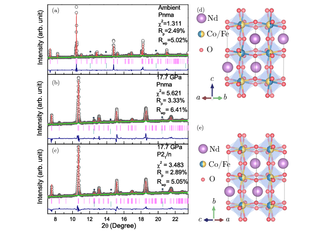

所感
先月報告されたLK-99(Pb10-xCux(PO4)6O)に関する常温常圧超伝導体に関する再試論文が多いが、とうとうScience誌やNature誌からLK-99 isn’t a superconductorという判断が下されたようだ。中国やアメリカから多くの再試実験が報告される一方で日本勢からは1本も論文が出ないのは、日本におけるアカデミアの余裕のなさが垣間見えるのか、ただ興味が薄いのか、それとも予め超伝導でないと見切りをつけていたのか。その他、個人的に気になる論文をピックアップして紹介しています。
論文タイトル一覧
- 室温常圧で超伝導を示す銅ドープ鉛アパタイト構造の合成と機構
- 多元素合金の機械的性質予測のための原始的な機械学習ツール
- 弾性カロリック効果によるフェロ四極子金属TmAg2のネマティック感受性の測定
- 単層CrSBrにおける電場誘起ハーフメタル
- キラル磁気ソリトンの発見と制御：ランダウ・リフシッツ・ギルバート方程式の厳密解
- 高圧下でのNd2CoFeO6二重ペロブスカイトの構造相転移と磁気弾性結合
- 多発性TbMnO3のスピン波分散とマグノンキラリティ
- 室温付近での磁気冷却効果の基礎と応用：RMn6Sn6系列の磁気構造と高エントロピー合金化の影響
- 分子動力学シミュレーションにおけるエネルギー保存の問題と機械学習ポテンシャルの役割
- パインズの悪魔の発見：Sr2RuO4における3次元音響プラズモンの観測
- 機械学習によるランダム位相近似からの密度汎関数の構築
- 材料特性予測のためのドメイン適応に基づく機械学習の改善
- 結晶化合物の構造変換モデル
- 1T-PtSe2族における対称性指標のない非標準性、遮断されたエッジ状態、およびマヨラナ工学
- 量子スピンネマティックのダイナミクス：傾いた反強磁性体との比較
- 既知の無機材料の組成データから結晶無機材料の合成可能性を予測する
- EPWコードを用いた第一原理に基づく電子-フォノン物理学
- X線回折パターンを再現する結晶構造の作成法
1. 室温常圧で超伝導を示す銅ドープ鉛アパタイト構造の合成と機構
・固相法を用いて、鉛アパタイト(Pb10(PO4)6O)に銅を部分的に置換したLK-99®という物質を合成した。この物質は、室温常圧で電気抵抗がゼロになる超伝導体であることを示した。
・LK-99®の結晶構造は、X線回折(XRD)により修飾鉛アパタイト(MLA)構造であることが分かった。銅のドープにより、結晶格子の体積収縮が起こり、絶縁体から金属への相転移(IMT)が引き起こされた。
・LK-99®の超伝導性は、温度や磁場に依存する磁化率やI-V特性を測定することで確認した。特に、室温常圧で物質が磁石の上で部分的に浮上するメイスナー効果を観察した。
・LK-99®の超伝導機構は、1次元的なCu2+−O1/2−Cu2+チェーンにおける電荷密度波(CDW)とオンサイトクーロン反発エネルギー(Uc)によるバイポーラロン形成とトンネル効果に基づくと考えられる。これは、BR-BCS理論により説明できる。
・LK-99®の結晶構造は、X線回折(XRD)により修飾鉛アパタイト(MLA)構造であることが分かった。銅のドープにより、結晶格子の体積収縮が起こり、絶縁体から金属への相転移(IMT)が引き起こされた。
・LK-99®の超伝導性は、温度や磁場に依存する磁化率やI-V特性を測定することで確認した。特に、室温常圧で物質が磁石の上で部分的に浮上するメイスナー効果を観察した。
・LK-99®の超伝導機構は、1次元的なCu2+−O1/2−Cu2+チェーンにおける電荷密度波(CDW)とオンサイトクーロン反発エネルギー(Uc)によるバイポーラロン形成とトンネル効果に基づくと考えられる。これは、BR-BCS理論により説明できる。
コメント：LK-99が常温常圧超伝導じゃないのは残念だけど、盛り上がり自体は好き。次に期待。
関連記事：サイエンス誌が最初に取り上げた記事（27 Jul 2023）：Breaking Superconductor News,
サイエンス誌が2度目に取り上げた記事（1 Aug 2023）：A Room-Temperature Superconductor? New Developments,
Nature誌が最初に取り上げた記事（4 Aug 2023）：LK-99 isn’t a superconductor — how science sleuths solved the mystery,
超伝導でないと決定づけたAlex Kaplan（誰？）のツイート（8 Aug 2023）,
サイエンス誌が3度目に取り上げた記事（8 Aug 2023）：The short, spectacular life of that viral room-temperature superconductivity claim,
最近Nature誌で報告された超伝導でないとする記事（16 Aug 2023）：Claimed superconductor LK-99 is an online sensation — but replication efforts fall short.
DATE: 11 Aug 2023 (v3), 26 Jul 2023 (v1)
Superconductor Pb10−xCux(PO4)6O showing levitation at room temperature and atmospheric pressure and mechanism
Sukbae Lee et al. (Quantum Energy Research Centre, South Korea)
arXiv:2307.12037 (cond-mat.supr-con)
Superconductor Pb10−xCux(PO4)6O showing levitation at room temperature and atmospheric pressure and mechanism
Sukbae Lee et al. (Quantum Energy Research Centre, South Korea)
arXiv:2307.12037 (cond-mat.supr-con)


2. 多元素合金の機械的性質予測のための原始的な機械学習ツール
・多元素合金（MPEA）の組成と6つの機械的性質（硬さ、降伏強度、引張強度、伸び、圧縮強度、塑性）を含むデータセットを作成した。
・MPEAの組成を機械学習モデルの入力ベクトルに変換するために、パーサーというツールを開発した。
・線形回帰、K近傍回帰、サポートベクター回帰、ランダムフォレスト回帰などのさまざまな機械学習モデルを適用して、MPEAの機械的性質を予測した。
・Gradioというライブラリを使って、機械学習モデルの予測結果を視覚化し、ユーザーと対話できるインターフェースを作成した。

・MPEAの組成を機械学習モデルの入力ベクトルに変換するために、パーサーというツールを開発した。
・線形回帰、K近傍回帰、サポートベクター回帰、ランダムフォレスト回帰などのさまざまな機械学習モデルを適用して、MPEAの機械的性質を予測した。
・Gradioというライブラリを使って、機械学習モデルの予測結果を視覚化し、ユーザーと対話できるインターフェースを作成した。
コメント：マテインフォ系のGUIの優れたソフトが最近色々な特性解析に拡張しているような気がする。
DATE: 15 Aug 2023
A primitive machine learning tool for the mechanical property prediction of multiple principal element alloys
R. Tan et al. (The Australian National University, Australia)
arXiv:2308.07649 (cond-mat)
A primitive machine learning tool for the mechanical property prediction of multiple principal element alloys
R. Tan et al. (The Australian National University, Australia)
arXiv:2308.07649 (cond-mat)
3. 弾性カロリック効果によるフェロ四極子金属TmAg2のネマティック感受性の測定
・TmAg2は、4f電子がフェロ四極子秩序を形成し、4回対称性を破る電子ネマティック相転移を5Kで起こす金属物質である。
・c軸に沿った磁場は、フェロ四極子秩序パラメータに対する有効な横場として機能し、相転移温度を3.2Tで完全に抑制する。
・弾性カロリック効果は、物質が経験するひずみによって誘起される温度変化を測定する技術であり、フェロ四極子-ひずみ感受性を直接探ることができる。
・弾性カロリック効果から得られたネマティック感受性は、弾性定数の測定と一致し、横場イジング模型によって定量的に説明される。
・c軸に沿った磁場は、フェロ四極子秩序パラメータに対する有効な横場として機能し、相転移温度を3.2Tで完全に抑制する。
・弾性カロリック効果は、物質が経験するひずみによって誘起される温度変化を測定する技術であり、フェロ四極子-ひずみ感受性を直接探ることができる。
・弾性カロリック効果から得られたネマティック感受性は、弾性定数の測定と一致し、横場イジング模型によって定量的に説明される。
コメント：弾性カロリック効果とフェロ四極子とc軸磁場の関係は興味深い。
補足：ネマティックとは、液体と固体の間にある液晶の一種で、分子の向きが平均して一方向に揃っているが、位置はばらばらで流動性をもつ状態のこと。物性物理分野では、固体中の電子やスピンなどがネマティックのように回転対称性を破る状態や現象について研究されている。例えば、鉄系超伝導体では、電子系が 4 回対称から 2 回対称へ低下する電子ネマティック状態に相転移することが知られていたり、フラストレート磁性体では、スピンの液体状態からスピンネマティック状態への転移が議論されている。さらに、超伝導状態においても、系のもつ回転対称性を破るネマティック超伝導が見つかっているようである。これらのネマティック現象は、固体物質の新奇な物性や相転移を理解するための重要なキーワードとして注目される。
補足：ネマティックとは、液体と固体の間にある液晶の一種で、分子の向きが平均して一方向に揃っているが、位置はばらばらで流動性をもつ状態のこと。物性物理分野では、固体中の電子やスピンなどがネマティックのように回転対称性を破る状態や現象について研究されている。例えば、鉄系超伝導体では、電子系が 4 回対称から 2 回対称へ低下する電子ネマティック状態に相転移することが知られていたり、フラストレート磁性体では、スピンの液体状態からスピンネマティック状態への転移が議論されている。さらに、超伝導状態においても、系のもつ回転対称性を破るネマティック超伝導が見つかっているようである。これらのネマティック現象は、固体物質の新奇な物性や相転移を理解するための重要なキーワードとして注目される。
DATE: 10 Aug 2023
The nematic susceptibility of the ferroquadrupolar metal TmAg2 measured via the elastocaloric effect
Elliott W et al. (Stanford University, USA)
arXiv:2308.05312 (cond-mat)
The nematic susceptibility of the ferroquadrupolar metal TmAg2 measured via the elastocaloric effect
Elliott W et al. (Stanford University, USA)
arXiv:2308.05312 (cond-mat)


4. 単層CrSBrにおける電場誘起ハーフメタル
・2層の磁性原子を持つ2次元（2D）強磁性（FM）材料に垂直電場をかけることで、ハーフメタル性（一方のスピンチャネルが金属で、もう一方が絶縁体または半導体である性質）を実現する新しいメカニズムを提案した。電場により、異なる層の電子バンドがずれることで、ハーフメタル性が誘起される。
・単層CrSBrは正方晶系の結晶構造を持ち、SとBr原子によって形成された歪んだ八面体配位にある2層のCr原子が磁性を持つ。第一原理計算により、CrSBrは電場なしではFM半導体であるが、適切な範囲の電場をかけるとFMハーフメタルになることを見出した。
・ハーフメタル性を誘起するために必要な電場強度は約0.4 V/Å程度であり、実験的に達成可能な値であることを示した。また、ハーフメタル性を定義するギャップは0.33 eV以上であり、スピン反転励起のエネルギーが十分に高いことを確認した。
・CrSBr単層を用いて、電場のオンオフによってデータ書き込みと読み出しを行う可能なスピントロニクスデバイスの概念図を示した。また、同じ構造とFM配位を持つ他の単層材料（VSF, VSeF, VSeBr, CrSCl, CrSI, CrSeBr, CrSeI）にも本研究の方法や分析が適用可能であることを指摘した。
・単層CrSBrは正方晶系の結晶構造を持ち、SとBr原子によって形成された歪んだ八面体配位にある2層のCr原子が磁性を持つ。第一原理計算により、CrSBrは電場なしではFM半導体であるが、適切な範囲の電場をかけるとFMハーフメタルになることを見出した。
・ハーフメタル性を誘起するために必要な電場強度は約0.4 V/Å程度であり、実験的に達成可能な値であることを示した。また、ハーフメタル性を定義するギャップは0.33 eV以上であり、スピン反転励起のエネルギーが十分に高いことを確認した。
・CrSBr単層を用いて、電場のオンオフによってデータ書き込みと読み出しを行う可能なスピントロニクスデバイスの概念図を示した。また、同じ構造とFM配位を持つ他の単層材料（VSF, VSeF, VSeBr, CrSCl, CrSI, CrSeBr, CrSeI）にも本研究の方法や分析が適用可能であることを指摘した。
コメント：ハーフメタル性を定義するギャップの閾値は0.33eVだったのか。これを電場誘起で発現させるのは興味深い。
DATE: 7 Aug 2023
Electric-field induced half-metal in monolayer CrSBr
Hao-Tian Guo et al. (Xi’an University of Posts and Telecommunications, China)
arXiv:2308.03430 (cond-mat)
Electric-field induced half-metal in monolayer CrSBr
Hao-Tian Guo et al. (Xi’an University of Posts and Telecommunications, China)
arXiv:2308.03430 (cond-mat)


5. キラル磁気ソリトンの発見と制御：ランダウ・リフシッツ・ギルバート方程式の厳密解
・ランダウ・リフシッツ・ギルバート方程式（LLG方程式）と一般化非線形シュレーディンガー方程式（GNLS方程式）との間に幾何学的な対応関係を見出し、LLG方程式を厳密に解くことができることを示した。
・ダルブー変換を用いて、等方性強磁性ナノワイヤー中に存在するキラル磁気ソリトンという新しい磁化構造の解析的な形式を導出した。キラル磁気ソリトンは、空間的に局在する孤立した波の一種で、鏡像対称性と位相ジャンプを持ち、左巻き、右巻き、中立の三種類に分類できる。スピンが360°回転する構造を持つ磁化構造を有する。
・スピン偏極電流の注入によって、キラル磁気ソリトンの運動を任意に操作できることを理論的にも数値的にも確認した。電流の強度や方向に応じて、ソリトンの速度や進行方向を変えたり、停止させたりできる。
・ギルバート減衰の影響を考慮すると、キラル磁気ソリトンは伝播中にエネルギーを失って均一な磁化状態に崩壊することを示した。しかし、適切なスピン電流を加えることで、非断熱的なスピントルクが減衰効果に対抗して、ソリトンの長距離伝播を可能にすることができる。
・ダルブー変換を用いて、等方性強磁性ナノワイヤー中に存在するキラル磁気ソリトンという新しい磁化構造の解析的な形式を導出した。キラル磁気ソリトンは、空間的に局在する孤立した波の一種で、鏡像対称性と位相ジャンプを持ち、左巻き、右巻き、中立の三種類に分類できる。スピンが360°回転する構造を持つ磁化構造を有する。
・スピン偏極電流の注入によって、キラル磁気ソリトンの運動を任意に操作できることを理論的にも数値的にも確認した。電流の強度や方向に応じて、ソリトンの速度や進行方向を変えたり、停止させたりできる。
・ギルバート減衰の影響を考慮すると、キラル磁気ソリトンは伝播中にエネルギーを失って均一な磁化状態に崩壊することを示した。しかし、適切なスピン電流を加えることで、非断熱的なスピントルクが減衰効果に対抗して、ソリトンの長距離伝播を可能にすることができる。
コメント：この研究では、交換場だけを考慮してキラル磁気ソリトンを解析しているようだが、他の有効場や異方性、不均一性などの要素が加わった場合にどうなるのか興味あり。
DATE: 16 Aug 2023
Discovery and regulation of chiral magnetic solitons: Exact solution from Landau-Lifshitz-Gilbert equation
Xin-Wei Jin et al. (Northwest University, China)
arXiv:2308.08331 (cond-mat)
Discovery and regulation of chiral magnetic solitons: Exact solution from Landau-Lifshitz-Gilbert equation
Xin-Wei Jin et al. (Northwest University, China)
arXiv:2308.08331 (cond-mat)

6. 高圧下でのNd2CoFeO6二重ペロブスカイトの構造相転移と磁気弾性結合
・高圧XRD測定：Nd2CoFeO6 (NCFO)は、高圧下で正方晶から単斜晶への構造相転移を約13.8 GPaで起こすことがXRD測定によって明らかになった。相転移は、(Fe/Co)O6八面体の歪みが圧力によって増加し、格子ひずみを緩和するために起こる。また、約1.1 GPaで体積圧縮率と体積弾性率に異常が見られたが、これは電子的な異常によるものと考えられる。
・低温ラマン分析：NCFOのラマンスペクトルは、温度が低下すると青方偏移するが、約47 Kで急激に赤方偏移することが低温ラマン分析によって示された。この赤方偏移は、スピン再配向転移に関連していると考えられる。また、約240 Kでラマンモード周波数に突然の飛びが見られたが、これは反強磁性転移温度TNと一致する。
・高圧ラマン分析：高圧下でのラマンスペクトルは、約27.4 GPaまで大きな変化は見られなかった。しかし、AgとBgモードのピーク位置は、約1 GPaと約13.1 GPaで傾きの変化を示した。13.1 GPa以上では、正方晶から単斜晶への構造相転移に関連して傾きが減少した。1 GPa以下では、圧力に対する傾きが半分以下に減少したが、これは新しいスピン配列によるものと推測される。
・磁場下での高圧ラマン分析：外部磁場を印加すると、Bgモードは圧力に伴って硬化した。この硬化は、スピンと磁場との強い相互作用によってスピンフォノン相互作用が影響を受けるためだと考えられる。また、磁場を切った後もラマンスペクトルは元の振る舞いに戻らなかった。この現象は詳細な理論的研究が必要である。
・低温ラマン分析：NCFOのラマンスペクトルは、温度が低下すると青方偏移するが、約47 Kで急激に赤方偏移することが低温ラマン分析によって示された。この赤方偏移は、スピン再配向転移に関連していると考えられる。また、約240 Kでラマンモード周波数に突然の飛びが見られたが、これは反強磁性転移温度TNと一致する。
・高圧ラマン分析：高圧下でのラマンスペクトルは、約27.4 GPaまで大きな変化は見られなかった。しかし、AgとBgモードのピーク位置は、約1 GPaと約13.1 GPaで傾きの変化を示した。13.1 GPa以上では、正方晶から単斜晶への構造相転移に関連して傾きが減少した。1 GPa以下では、圧力に対する傾きが半分以下に減少したが、これは新しいスピン配列によるものと推測される。
・磁場下での高圧ラマン分析：外部磁場を印加すると、Bgモードは圧力に伴って硬化した。この硬化は、スピンと磁場との強い相互作用によってスピンフォノン相互作用が影響を受けるためだと考えられる。また、磁場を切った後もラマンスペクトルは元の振る舞いに戻らなかった。この現象は詳細な理論的研究が必要である。
コメント：電子的な相転移や構造的な相転移を評価するのに歪み印加は有効のようだ。
DATE: 18 Aug 2023
Pressure-induced softening in bulk modulus due to magneto-elastic coupling in Nd2CoFeO6 double Perovskite
Bidisha Mukherjee et al. (Indian Institute of Science Education and Research Kolkata, India)
arXiv:2308.09651 (cond-mat)
Pressure-induced softening in bulk modulus due to magneto-elastic coupling in Nd2CoFeO6 double Perovskite
Bidisha Mukherjee et al. (Indian Institute of Science Education and Research Kolkata, India)
arXiv:2308.09651 (cond-mat)

7. 多発性TbMnO3のスピン波分散とマグノンキラリティ
・多発性TbMnO3は、複雑な磁気構造によって電気分極を直接誘起するタイプII多発性物質の代表例である。
・中性子散乱実験と線形スピン波理論を用いて、多発性相でのマグノン分散と強度分布を詳細に調べた。
・楕円形スピンサイクロイドと単一イオン異方性を考慮したモデルが、実験データとよく一致し、交換相互作用やダイナミックキラリティのパラメーターを決定した。
・電場効果やTbモーメントの秩序化（Tb3+の4f電子がMn3+の3d電子と結合）が、マグノン分散やキラリティに影響を与えることを示し、多発性結合機構や電磁マグノンについて議論した。
・Tbモーメントは、マグノン分散やキラリティにも影響を与え、特に、Tbモーメントの秩序化が起こる低温領域では、マグノン分散がギャップを開き、キラリティが反転する。これは、Tbモーメントが逆DM相互作用を強めることで、マグノンのエネルギーとキラリティに影響を与えることを示している。
・中性子散乱実験と線形スピン波理論を用いて、多発性相でのマグノン分散と強度分布を詳細に調べた。
・楕円形スピンサイクロイドと単一イオン異方性を考慮したモデルが、実験データとよく一致し、交換相互作用やダイナミックキラリティのパラメーターを決定した。
・電場効果やTbモーメントの秩序化（Tb3+の4f電子がMn3+の3d電子と結合）が、マグノン分散やキラリティに影響を与えることを示し、多発性結合機構や電磁マグノンについて議論した。
・Tbモーメントは、マグノン分散やキラリティにも影響を与え、特に、Tbモーメントの秩序化が起こる低温領域では、マグノン分散がギャップを開き、キラリティが反転する。これは、Tbモーメントが逆DM相互作用を強めることで、マグノンのエネルギーとキラリティに影響を与えることを示している。
コメント：4f電子と3d電子の相互作用の効果はまだまだ未知領域で興味深い。
DATE: 18 Aug 2023
Spin-wave dispersion and magnon chirality in multiferroic TbMnO3
S. Holbein et al. (Universit¨at zu K¨oln, Germany)
arXiv:2308.09407 (cond-mat)
Spin-wave dispersion and magnon chirality in multiferroic TbMnO3
S. Holbein et al. (Universit¨at zu K¨oln, Germany)
arXiv:2308.09407 (cond-mat)


8. 室温付近での磁気冷却効果の基礎と応用：RMn6Sn6系列の磁気構造と高エントロピー合金化の影響
・RMn6Sn6はカゴメ格子を形成するMn原子と三角格子を形成する希土類原子Rからなる物質で、RKKY相互作用によって磁気構造がRの選択に敏感に変化することが示された。
・RMn6Sn6は室温付近でFM、FIM、AFMの異なる磁気秩序を示し、それぞれに対応する磁気冷却効果（MCE）を評価した。FMやFIMの秩序を持つ物質（例えばHoMn6Sn6）はAFMの秩序を持つ物質（例えばLuMn6Sn6）よりも大きなMCEを示した。
・MCEの効率は最大エントロピー変化（∆SMAX）だけでなく、磁気転移の幅（FWHM）や冷却容量（RC）にも依存することが分かった。FWHMが大きいほどRCが大きくなり、MCEが高効率になることが示された。
・高エントロピー合金化はRKKY相互作用をランダム化し、磁気転移を広げることでRCを増加させる可能性があると考えられた。しかし、本研究では4種類や5種類の希土類元素を混合した高エントロピー合金（HEA）を作製しても、純粋なRMn6Sn6と比較してMCEに顕著な改善は見られなかった。
・RMn6Sn6は室温付近でFM、FIM、AFMの異なる磁気秩序を示し、それぞれに対応する磁気冷却効果（MCE）を評価した。FMやFIMの秩序を持つ物質（例えばHoMn6Sn6）はAFMの秩序を持つ物質（例えばLuMn6Sn6）よりも大きなMCEを示した。
・MCEの効率は最大エントロピー変化（∆SMAX）だけでなく、磁気転移の幅（FWHM）や冷却容量（RC）にも依存することが分かった。FWHMが大きいほどRCが大きくなり、MCEが高効率になることが示された。
・高エントロピー合金化はRKKY相互作用をランダム化し、磁気転移を広げることでRCを増加させる可能性があると考えられた。しかし、本研究では4種類や5種類の希土類元素を混合した高エントロピー合金（HEA）を作製しても、純粋なRMn6Sn6と比較してMCEに顕著な改善は見られなかった。
コメント：RKKY相互作用や高エントロピー合金化が磁気冷却効果に与える影響についてよくわかった。希土類元素の選択は重要だが、その何が効いてくるのか気になる。
DATE: 17 Aug 2023
Rare-earth Engineering of the Magnetocaloric Effect in RMn6Sn6
Kyle Fruhling et al. (Boston College, USA)
arXiv:2308.09161 (cond-mat)
Rare-earth Engineering of the Magnetocaloric Effect in RMn6Sn6
Kyle Fruhling et al. (Boston College, USA)
arXiv:2308.09161 (cond-mat)

9. 分子動力学シミュレーションにおけるエネルギー保存の問題と機械学習ポテンシャルの役割
・分子動力学シミュレーションでは、シミュレーションエネルギーの保存と真のエネルギーの保存という二つの概念を明確に区別する必要がある。シミュレーションエネルギーの保存は、シミュレーションの品質を保証するものではなく、真のエネルギーの保存に近づくことが重要である。
・真のエネルギーの保存を評価するために、理論的最良推定（TBE）と呼ばれる概念を提案する。TBEは、可能な限り高精度で計算コストが低い原子間モデルを用いて、シミュレーション後にポテンシャルエネルギーを計算することで得られる。TBE全エネルギーが一定であれば、シミュレーションは真のエネルギーを保存していると言える。
・機械学習（ML）ポテンシャルは、シミュレーションエネルギーを保存することができるが、分子が不安定になったり解離したりするなど、物理的に正しくない結果を与えることがある。このような場合、TBE全エネルギーは大きく変動し、真のエネルギーの保存から外れることが示される。
・真のエネルギーの保存に近づくために、異なる原子間モデルを組み合わせた混合モデル戦略を提案する。この戦略では、必要に応じてより高精度のモデルに切り替えることで、シミュレーションエネルギーの連続性を犠牲にしながらも、TBE全エネルギーの変動を抑えることができる。
・真のエネルギーの保存を評価するために、理論的最良推定（TBE）と呼ばれる概念を提案する。TBEは、可能な限り高精度で計算コストが低い原子間モデルを用いて、シミュレーション後にポテンシャルエネルギーを計算することで得られる。TBE全エネルギーが一定であれば、シミュレーションは真のエネルギーを保存していると言える。
・機械学習（ML）ポテンシャルは、シミュレーションエネルギーを保存することができるが、分子が不安定になったり解離したりするなど、物理的に正しくない結果を与えることがある。このような場合、TBE全エネルギーは大きく変動し、真のエネルギーの保存から外れることが示される。
・真のエネルギーの保存に近づくために、異なる原子間モデルを組み合わせた混合モデル戦略を提案する。この戦略では、必要に応じてより高精度のモデルに切り替えることで、シミュレーションエネルギーの連続性を犠牲にしながらも、TBE全エネルギーの変動を抑えることができる。
コメント：分子動力学シミュレーションにおけるエネルギー保存の問題に新しい視点を提供し、機械学習ポテンシャルの開発や評価に役立つ指標や戦略を提案している。特に、TBE全エネルギーという概念は、真のエネルギーの保存からどれだけ外れているかを直感的に把握できる有用な手法である。
また、主に小さな分子系（N2O, H2, C6H6）について数値実験を行っており、より大きく複雑な系や異なる温度や圧力下での挙動、また、TBE全エネルギーを計算するために用いられる原子間モデルやパラメータ（例えば時間刻みや混合モデルの切り替え条件）の選択についても、より詳細な基準や根拠が欲しいところ。
また、主に小さな分子系（N2O, H2, C6H6）について数値実験を行っており、より大きく複雑な系や異なる温度や圧力下での挙動、また、TBE全エネルギーを計算するために用いられる原子間モデルやパラメータ（例えば時間刻みや混合モデルの切り替え条件）の選択についても、より詳細な基準や根拠が欲しいところ。
DATE: 22 Aug 2023
Energy-conserving molecular dynamics is not energy conserving
Lina Zhang et al. (Xiamen University, China)
arXiv:2308.11305 (physics.chem-ph)
Energy-conserving molecular dynamics is not energy conserving
Lina Zhang et al. (Xiamen University, China)
arXiv:2308.11305 (physics.chem-ph)

10. パインズの悪魔の発見：Sr2RuO4における3次元音響プラズモンの観測
・Sr2RuO4は、電子密度の量子化された集団振動であるプラズモンと、異なるバンドの電子が逆位相で動くことで電荷が中性になるデーモンという2種類の集団励起モードを持つことを理論的に予測した。
・デーモンは、光と結合しないため、非ゼロの運動量で電子エネルギー損失分光法（EELS）を用いて検出することができる。
・Sr2RuO4のEELS測定から、デーモンの存在を実験的に確認した。デーモンは、エネルギーギャップが小さく、運動量に対して線形に分散し、強度がq−1.8というべき乗則に従うことから、中性で音響的な性質を持つことが分かった。
・デーモンは、1956年にPinesによって予想されたが、3次元金属で観測されたのは今回が初めてである。デーモンは、多バンド金属の低エネルギー物理や超伝導性などに重要な役割を果たす可能性がある。
・デーモンは、光と結合しないため、非ゼロの運動量で電子エネルギー損失分光法（EELS）を用いて検出することができる。
・Sr2RuO4のEELS測定から、デーモンの存在を実験的に確認した。デーモンは、エネルギーギャップが小さく、運動量に対して線形に分散し、強度がq−1.8というべき乗則に従うことから、中性で音響的な性質を持つことが分かった。
・デーモンは、1956年にPinesによって予想されたが、3次元金属で観測されたのは今回が初めてである。デーモンは、多バンド金属の低エネルギー物理や超伝導性などに重要な役割を果たす可能性がある。
コメント：電子が結合して、質量がなく、電気的に中性で、光と相互作用しない複合粒子を形成できるとパインズが予測した。実験での粗い実証でギャップを残しつつその他の証拠から特殊なプラズモンの存在を説明できるのだという。詳しくはぶひんさんのブログに書かれています。
関連記事：京都大学プレスリリース（10 Aug 2023）Sr2RuO4での「パインズの悪魔」の観測 67年前に予言された金属の奇妙な振る舞いの発見、ぶひんブログ（27 Aug 2023）あくまで悪魔ですから～ルテネイト酸化物で観測されたパインズのデーモン～
補足：Sr2RuO4は、非従来型の超伝導体であり、スピン三重項状態という特異な秩序パラメーターの対称性を持つと考えられている。スピン三重項超伝導体では、電子のスピンが反平行ではなく平行になることで、磁場に対して強い超伝導性を示す可能性がある。Sr2RuO4は、電子密度の量子化された集団振動であるプラズモンと、異なるバンドの電子が逆位相で動くことで電荷が中性になるデーモンという2種類の集団励起モードを持つことが理論的に予測されている。デーモンは、光と結合しないため、非ゼロの運動量で電子エネルギー損失分光法（EELS）を用いて検出することができる。デーモンは、1956年にPinesによって予想されたが、3次元金属で観測されたのは今回が初めてである。デーモンは、多バンド金属の低エネルギー物理や超伝導性などに重要な役割を果たす可能性がある。
関連記事：京都大学プレスリリース（10 Aug 2023）Sr2RuO4での「パインズの悪魔」の観測 67年前に予言された金属の奇妙な振る舞いの発見、ぶひんブログ（27 Aug 2023）あくまで悪魔ですから～ルテネイト酸化物で観測されたパインズのデーモン～
補足：Sr2RuO4は、非従来型の超伝導体であり、スピン三重項状態という特異な秩序パラメーターの対称性を持つと考えられている。スピン三重項超伝導体では、電子のスピンが反平行ではなく平行になることで、磁場に対して強い超伝導性を示す可能性がある。Sr2RuO4は、電子密度の量子化された集団振動であるプラズモンと、異なるバンドの電子が逆位相で動くことで電荷が中性になるデーモンという2種類の集団励起モードを持つことが理論的に予測されている。デーモンは、光と結合しないため、非ゼロの運動量で電子エネルギー損失分光法（EELS）を用いて検出することができる。デーモンは、1956年にPinesによって予想されたが、3次元金属で観測されたのは今回が初めてである。デーモンは、多バンド金属の低エネルギー物理や超伝導性などに重要な役割を果たす可能性がある。
DATE: 09 Aug 2023
Pines’ demon observed as a 3D acoustic plasmon in Sr2RuO4
Ali A. Husain et al. (University of Illinois, Urbana, IL, USA)
Nature:s41586-023-06318-8 (article)
Pines’ demon observed as a 3D acoustic plasmon in Sr2RuO4
Ali A. Husain et al. (University of Illinois, Urbana, IL, USA)
Nature:s41586-023-06318-8 (article)


11. 機械学習によるランダム位相近似からの密度汎関数の構築
・ランダム位相近似（RPA）という高精度な密度汎関数理論（DFT）を、機械学習（ML）の技術を用いて低コストで再現するML-RPAモデルを提案している。
・ML-RPAモデルは、電子密度の非局所的な表現とカーネル回帰を組み合わせて、RPAの交換相関エネルギーとポテンシャルを近似するものである。
・ML-RPAモデルは、ダイヤモンドと液体水のデータセットに対して訓練され、RPAと同等の精度で物性や分光学的性質を予測することができる。
・ML-RPAモデルは、自己無撞着計算や分子動力学シミュレーションなど、通常のDFTと同様に応用することができ、均一電子気体などのDFTにおける重要な基準にも適合している。
・ML-RPAモデルは、電子密度の非局所的な表現とカーネル回帰を組み合わせて、RPAの交換相関エネルギーとポテンシャルを近似するものである。
・ML-RPAモデルは、ダイヤモンドと液体水のデータセットに対して訓練され、RPAと同等の精度で物性や分光学的性質を予測することができる。
・ML-RPAモデルは、自己無撞着計算や分子動力学シミュレーションなど、通常のDFTと同様に応用することができ、均一電子気体などのDFTにおける重要な基準にも適合している。
コメント：VASPの開発部隊らによって高次のDFTからML-DFTを構築するという新しいアプローチが提案漁れていて興味深い。RPAはDFTにおける最高水準の理論であり、その再現性や汎用性は非常に気になるところ。特に、ML-RPAモデルが水や氷などの非局所的な相互作用を十分に記述できていないことを指摘していて、電子密度表現のカットオフ半径が小さいことに由来するらしい。カットオフ半径と計算精度についてどんな関係があるだろうか。
関連記事： VASP (Vienna Ab Initio Simulation Package) NEW RELEASE: VASP.6.4.2, vaspkit: Overview
補足：DFTは、物質の電子状態を計算するための理論であり、量子力学の基礎方程式であるSchrödinger方程式を解く代わりに、電子密度という物理量を用いてエネルギーや物性を求めることができる。DFTは、計算コストが小さく、多くの物質に適用できるという利点があるが、電子間の相互作用を厳密に記述できないという欠点がある。このため、DFTの精度は、電子間の相互作用を近似する汎関数と呼ばれる項に依存する。RPAは、DFTにおける最高水準の汎関数の一つであり、電子間の相互作用を高精度に記述することができる。しかし、RPAは計算コストが非常に高く、大規模な系や動的な過程を扱うことが困難である。この研究では、MLの技術を量子化学計算と組み合わせることで、RPAと同等の精度で物性や分光学的性質を予測することができるML-RPAモデルを開発した。
関連記事： VASP (Vienna Ab Initio Simulation Package) NEW RELEASE: VASP.6.4.2, vaspkit: Overview
補足：DFTは、物質の電子状態を計算するための理論であり、量子力学の基礎方程式であるSchrödinger方程式を解く代わりに、電子密度という物理量を用いてエネルギーや物性を求めることができる。DFTは、計算コストが小さく、多くの物質に適用できるという利点があるが、電子間の相互作用を厳密に記述できないという欠点がある。このため、DFTの精度は、電子間の相互作用を近似する汎関数と呼ばれる項に依存する。RPAは、DFTにおける最高水準の汎関数の一つであり、電子間の相互作用を高精度に記述することができる。しかし、RPAは計算コストが非常に高く、大規模な系や動的な過程を扱うことが困難である。この研究では、MLの技術を量子化学計算と組み合わせることで、RPAと同等の精度で物性や分光学的性質を予測することができるML-RPAモデルを開発した。
DATE: 1 Aug 2023
Machine learning density functionals from the random-phase approximation
Stefan Riemelmoser et al. (University of Vienna, Austria)
arXiv:2308.11305 (cond-mat.mtrl-sci)
Machine learning density functionals from the random-phase approximation
Stefan Riemelmoser et al. (University of Vienna, Austria)
arXiv:2308.11305 (cond-mat.mtrl-sci)
12. 材料特性予測のためのドメイン適応に基づく機械学習の改善
・ドメインシフト問題：機械学習モデルは、訓練データと異なる分布を持つ新しいデータに対して性能が低下するという問題に直面している。これはドメインシフト問題と呼ばれる。
・ドメイン適応手法：ドメイン適応手法は、ソースドメイン（訓練データ）とターゲットドメイン（テストデータ）の知識を利用して、ターゲットドメインに適応し、汎化性能を向上させることを目的としている。ドメイン適応手法には、特徴ベース、インスタンスベース、パラメータベースの三つの主要なカテゴリがある。
・材料特性予測のベンチマーク：材料特性予測では、ターゲット材料の組成や構造が既知であり、かつ希少な組成や特異な特性を持つ材料に興味があることが多い。このような場合には、テストデータは訓練データと異なる分布を持つ。そこで、我々は室温超伝導体やガラス材料のデータセットを用いて、五つの現実的な材料特性予測のベンチマーク問題を提案した。
・実験結果と考察：我々は30以上の既存のドメイン適応手法をベンチマーク問題に適用し、その性能を評価した。その結果、一部のドメイン適応手法は、ベースラインモデルや最先端のニューラルネットワークモデルよりも優れた性能を示した。特に、インスタンスベースのドメイン適応手法であるBWやRULSIFが強力な性能を発揮した。一方で、特徴ベースやパラメータベースのドメイン適応手法は、材料科学の分野におけるドメインシフトの関係を捉えられていないために、性能が低下することが多く見られた。
・ドメイン適応手法：ドメイン適応手法は、ソースドメイン（訓練データ）とターゲットドメイン（テストデータ）の知識を利用して、ターゲットドメインに適応し、汎化性能を向上させることを目的としている。ドメイン適応手法には、特徴ベース、インスタンスベース、パラメータベースの三つの主要なカテゴリがある。
・材料特性予測のベンチマーク：材料特性予測では、ターゲット材料の組成や構造が既知であり、かつ希少な組成や特異な特性を持つ材料に興味があることが多い。このような場合には、テストデータは訓練データと異なる分布を持つ。そこで、我々は室温超伝導体やガラス材料のデータセットを用いて、五つの現実的な材料特性予測のベンチマーク問題を提案した。
・実験結果と考察：我々は30以上の既存のドメイン適応手法をベンチマーク問題に適用し、その性能を評価した。その結果、一部のドメイン適応手法は、ベースラインモデルや最先端のニューラルネットワークモデルよりも優れた性能を示した。特に、インスタンスベースのドメイン適応手法であるBWやRULSIFが強力な性能を発揮した。一方で、特徴ベースやパラメータベースのドメイン適応手法は、材料科学の分野におけるドメインシフトの関係を捉えられていないために、性能が低下することが多く見られた。
コメント：この研究は、主に組成ベースの材料特性予測に焦点を当てているが、構造ベースの材料特性予測にもドメイン適応手法を適用することができそう。また、不確実性量化などの技術を導入して予測結果の信頼性や説明性を向上させるような展開も期待できる。
関連記事： VASP (Vienna Ab Initio Simulation Package) NEW RELEASE: VASP.6.4.2, vaspkit: Overview
補足：ドメイン適応手法とは、ソースドメイン（訓練データ）とターゲットドメイン（テストデータ）の間の分布の違いを縮小することで、ターゲットドメインにおけるモデルの性能を向上させるための機械学習の手法である。ドメイン適応手法には、特徴ベース、インスタンスベース、パラメータベースの三つの主要なカテゴリがある。特徴ベース：ソースドメインとターゲットドメインの特徴空間を変換することで、分布の差を埋める手法である。例えば、敵対的学習を用いて、特徴抽出器が両ドメインの特徴を区別できないようにしている。インスタンスベース：ソースドメインとターゲットドメインのサンプル間の重み付けや再サンプリングを行うことで、分布の差を埋める手法である。例えば、重み付き最小二乗法（WLS）や相対的不確実性サンプリング（RULSIF）などの手法を用いて、ターゲットドメインに近いソースドメインのサンプルに重みを付けている。パラメータベース：ソースドメインとターゲットドメインのモデルパラメータ間の関係を利用することで、分布の差を埋める手法である。例えば、ソースドメインで学習したモデルパラメータを正則化項として用いて、ターゲットドメインでモデルを微調整している。
関連記事： VASP (Vienna Ab Initio Simulation Package) NEW RELEASE: VASP.6.4.2, vaspkit: Overview
補足：ドメイン適応手法とは、ソースドメイン（訓練データ）とターゲットドメイン（テストデータ）の間の分布の違いを縮小することで、ターゲットドメインにおけるモデルの性能を向上させるための機械学習の手法である。ドメイン適応手法には、特徴ベース、インスタンスベース、パラメータベースの三つの主要なカテゴリがある。特徴ベース：ソースドメインとターゲットドメインの特徴空間を変換することで、分布の差を埋める手法である。例えば、敵対的学習を用いて、特徴抽出器が両ドメインの特徴を区別できないようにしている。インスタンスベース：ソースドメインとターゲットドメインのサンプル間の重み付けや再サンプリングを行うことで、分布の差を埋める手法である。例えば、重み付き最小二乗法（WLS）や相対的不確実性サンプリング（RULSIF）などの手法を用いて、ターゲットドメインに近いソースドメインのサンプルに重みを付けている。パラメータベース：ソースドメインとターゲットドメインのモデルパラメータ間の関係を利用することで、分布の差を埋める手法である。例えば、ソースドメインで学習したモデルパラメータを正則化項として用いて、ターゲットドメインでモデルを微調整している。
DATE: 5 Aug 2023
Improving realistic material property prediction using domain adaptation based machine learning
Jeffrey Hu et al. (University of South Carolina, USA)
arXiv:2308.02937 (cond-mat.mtrl-sci)
Improving realistic material property prediction using domain adaptation based machine learning
Jeffrey Hu et al. (University of South Carolina, USA)
arXiv:2308.02937 (cond-mat.mtrl-sci)
13. 結晶化合物の構造変換モデル
・結晶化合物の構造最適化にかかる計算コストを削減するために、未最適化構造と最適化構造の間のドメイン変換モデルを提案した。このモデルは、pix2pixと呼ばれる画像間変換モデルを基にしており、結晶グラフ畳み込みニューラルネットワークで得られた結晶特徴ベクトルを変換する。
・X-Mn-O（X=Mg, Ca, Sr, Ba）という元素置換データセットを用いて、提案モデルの性能を評価した。1未最適化構造から最適化構造の形成エネルギーを予測する際に、提案モデルは他の3つのGCNベースのベースラインモデルよりも高い精度と汎化性能を示した。
・提案モデルは、未最適化構造から最適化構造への変換後の結晶特徴ベクトルを生成することができる。この特徴ベクトルは、t-SNEによって2次元空間にマッピングされ、最適化構造の特徴空間と分布が一致することが確認された。
・提案モデルは、未最適化構造から最適化構造への変換後の結晶特徴ベクトルを用いて、最適化構造の原子座標や単位胞情報を予測することができる。この予測により、84%の結晶構造が正しく再現された。また、DFT計算による完全な構造最適化に必要なコストも32%削減された。
・X-Mn-O（X=Mg, Ca, Sr, Ba）という元素置換データセットを用いて、提案モデルの性能を評価した。1未最適化構造から最適化構造の形成エネルギーを予測する際に、提案モデルは他の3つのGCNベースのベースラインモデルよりも高い精度と汎化性能を示した。
・提案モデルは、未最適化構造から最適化構造への変換後の結晶特徴ベクトルを生成することができる。この特徴ベクトルは、t-SNEによって2次元空間にマッピングされ、最適化構造の特徴空間と分布が一致することが確認された。
・提案モデルは、未最適化構造から最適化構造への変換後の結晶特徴ベクトルを用いて、最適化構造の原子座標や単位胞情報を予測することができる。この予測により、84%の結晶構造が正しく再現された。また、DFT計算による完全な構造最適化に必要なコストも32%削減された。
コメント：この研究は、高スループットな材料探索において重要な課題である構造最適化のコスト削減に貢献するものである。ドメイン変換モデルを用いて、未最適化構造から最適化構造への変換を効率的に行うことができるというアイデアは画期的である。また、X-Mn-Oという限られた化学空間で実証されたが、より多様な元素や組成を含む一般的な材料データセットに対しても同様に有効であるかどうかは不明である。また、提案モデルが予測する最適化構造が真に安定なものであるかどうかも確認する必要がある。
関連記事： Github: Cryslator Implementation of Cryslator developed by Prof. Yousung Jung group at Seoul National University
補足：ドメイン変換モデルは、あるドメイン（例えば、馬の画像）から別のドメイン（例えば、シマウマの画像）への画像変換を学習するニューラルネットワークである。pix2pixは、ドメイン変換モデルの一種で、条件付きGANと呼ばれるGANモデルを用いている。pix2pixは、入力画像と出力画像に相当する2つの画像の対応関係を学習するために、ペア画像（入力画像と出力画像が1対1で対応している画像）を必要とする。しかし、ペア画像を大量に入手することは困難な場合が多く、この点がpix2pixの課題である。ドメイン変換モデルには、ペア画像を必要としないものもあり、例えば、CycleGANは、2つのドメインに属する画像データセットからその関係を学習し、双方向の画像変換を行うことができる。CycleGANは、pix2pixと同じく条件付きGANを用いているが、サイクル一貫性損失と呼ばれる損失関数を導入することで、ペア画像なしでドメイン変換を学習できるようにしている。
関連記事： Github: Cryslator Implementation of Cryslator developed by Prof. Yousung Jung group at Seoul National University
補足：ドメイン変換モデルは、あるドメイン（例えば、馬の画像）から別のドメイン（例えば、シマウマの画像）への画像変換を学習するニューラルネットワークである。pix2pixは、ドメイン変換モデルの一種で、条件付きGANと呼ばれるGANモデルを用いている。pix2pixは、入力画像と出力画像に相当する2つの画像の対応関係を学習するために、ペア画像（入力画像と出力画像が1対1で対応している画像）を必要とする。しかし、ペア画像を大量に入手することは困難な場合が多く、この点がpix2pixの課題である。ドメイン変換モデルには、ペア画像を必要としないものもあり、例えば、CycleGANは、2つのドメインに属する画像データセットからその関係を学習し、双方向の画像変換を行うことができる。CycleGANは、pix2pixと同じく条件付きGANを用いているが、サイクル一貫性損失と呼ばれる損失関数を導入することで、ペア画像なしでドメイン変換を学習できるようにしている。
DATE: 11 Aug 2023
A structure translation model for crystal compounds
Sungwon Kim et al. (University of South Carolina, USA)
npj Computational Materials (2023) 9:142
A structure translation model for crystal compounds
Sungwon Kim et al. (University of South Carolina, USA)
npj Computational Materials (2023) 9:142
14. 1T-PtSe2族における対称性指標のない非標準性、遮断されたエッジ状態、およびマヨラナ工学
・1T-PtSe2は、Pt-dとSe-px,yの軌道混成に起因する対称性指標のない非標準的な絶縁体であることを第一原理計算によって示した。この非標準性は、対称性固有値ではなく、1次元ウィルソンループ法によって計算された電荷中心のずれによって診断される。
・1T-PtSe2のジグザグエッジには、遮断された電子状態が現れ、大きなラシュバ分裂を示す。これらの1次元エッジ状態は、超伝導近接効果と外部磁場の下で、スピンレスp波キタエフ鎖と等価になる。
・1T-PtSe2単層の四隅にマヨラナゼロモード（MZM）を生成する方法を提案した。MZMは、ジグザグエッジに磁気ギャップを誘起する強磁性絶縁体CrGeTe3を基板として用いることで実現可能である。
・1T-PtSe2族（MX2; M = Ni, Pd, Pt; X = S, Se, Te）の他のメンバーも対称性指標のない非標準性を持つことを示した。また、(Ga/In)3+や(Ge/Sn)4+の価電子を持つ化合物にもこのような非標準性が広く存在することを見出した。
・1T-PtSe2のジグザグエッジには、遮断された電子状態が現れ、大きなラシュバ分裂を示す。これらの1次元エッジ状態は、超伝導近接効果と外部磁場の下で、スピンレスp波キタエフ鎖と等価になる。
・1T-PtSe2単層の四隅にマヨラナゼロモード（MZM）を生成する方法を提案した。MZMは、ジグザグエッジに磁気ギャップを誘起する強磁性絶縁体CrGeTe3を基板として用いることで実現可能である。
・1T-PtSe2族（MX2; M = Ni, Pd, Pt; X = S, Se, Te）の他のメンバーも対称性指標のない非標準性を持つことを示した。また、(Ga/In)3+や(Ge/Sn)4+の価電子を持つ化合物にもこのような非標準性が広く存在することを見出した。
コメント：対称性指標のない非標準性は、トポロジカル絶縁体と同様に、対称性だけでは診断できない新しい物質クラスであると言える。この非標準性がどのような物理的効果や応用につながるかは今後の課題である。
1T-PtSe2単層でMZMを生成する方法は、実験的にアクセス可能であり、量子情報処理やトポロジカル量子計算におけるMZMの利用可能性を示唆している。しかし、MZMの存在や操作を確認するためには、さらに詳細な理論的予測や実験的手法が必要である。
補足：トポロジカル絶縁体は、超伝導や磁性といった他の秩序と相互作用することで、さらに興味深い現象を生み出す。例えば、超伝導近接効果という現象では、超伝導体と接触した非超伝導体にも超伝導性が誘起される。この現象をトポロジカル絶縁体のエッジ状態に適用することで、マヨラナ粒子と呼ばれる特殊な準粒子が生成される可能性がある。マヨラナ粒子は、自分自身の反粒子であり、量子情報処理やトポロジカル量子計算に応用できると期待されている。
補足：トポロジカル絶縁体は、超伝導や磁性といった他の秩序と相互作用することで、さらに興味深い現象を生み出す。例えば、超伝導近接効果という現象では、超伝導体と接触した非超伝導体にも超伝導性が誘起される。この現象をトポロジカル絶縁体のエッジ状態に適用することで、マヨラナ粒子と呼ばれる特殊な準粒子が生成される可能性がある。マヨラナ粒子は、自分自身の反粒子であり、量子情報処理やトポロジカル量子計算に応用できると期待されている。
DATE: 23 Aug 2023
Symmetry indicator-free unconventionality, obstructed edge states and Majorana engineering in 1T-PtSe2 family
Haohao Sheng et al. (Chinese Academy of Sciences, China)
arXiv:2308.12055
Symmetry indicator-free unconventionality, obstructed edge states and Majorana engineering in 1T-PtSe2 family
Haohao Sheng et al. (Chinese Academy of Sciences, China)
arXiv:2308.12055
15. 量子スピンネマティックのダイナミクス：傾いた反強磁性体との比較
・スピンネマティックの理論：三次元量子スピン系におけるスピンネマティック相を記述するために、マグノンとバイマグノンの相互作用するボソン理論を開発した。バイマグノンの形状因子を導入して、サイトネマティックやボンドネマティックなど、様々なタイプのスピンネマティック秩序を統一的に扱えるようにした。
・ダイナミクスの計算：ゼロ温度での動的スピン構造因子と有限温度での核磁気共鳴（NMR）緩和率を計算した。動的スピン構造因子は、バイマグノンの形状因子に依存する強度変化や、ギャップレスなナンブ-ゴールドストーンモードを示した。NMR緩和率は、低温ではT 3 に比例し、スピンネマティック転移温度では発散しないことを見出した。
・傾いた反強磁性体との比較：同じ方法論を用いて、傾いた反強磁性体におけるダイナミクスも分析した。傾いた反強磁性体では、動的スピン構造因子はギャップレスなナンブ-ゴールドストーンモードとその上にある連続体を示し、NMR緩和率は低温ではT 3 に比例するが、反強磁性転移温度では発散することがわかった。これらの結果は、スピンネマティックと傾いた反強磁性体のダイナミクスには類似点と相違点があることを示している。
・物理的意義と展望：この研究は、スピンネマティック相におけるダイナミクスの包括的な理解を提供し、実験的な検証や識別に役立つ指標を与えた。また、バイマグノンの形状因子や対称性がダイナミクスに与える影響を明らかにし、隠れた秩序パラメーターの構造を探る手段を示した。さらに、傾いた反強磁性体との比較により、異なるタイプの秩序間で共通する特徴や差異を見出し、量子臨界現象や相転移の性質に関する洞察を得た。
・ダイナミクスの計算：ゼロ温度での動的スピン構造因子と有限温度での核磁気共鳴（NMR）緩和率を計算した。動的スピン構造因子は、バイマグノンの形状因子に依存する強度変化や、ギャップレスなナンブ-ゴールドストーンモードを示した。NMR緩和率は、低温ではT 3 に比例し、スピンネマティック転移温度では発散しないことを見出した。
・傾いた反強磁性体との比較：同じ方法論を用いて、傾いた反強磁性体におけるダイナミクスも分析した。傾いた反強磁性体では、動的スピン構造因子はギャップレスなナンブ-ゴールドストーンモードとその上にある連続体を示し、NMR緩和率は低温ではT 3 に比例するが、反強磁性転移温度では発散することがわかった。これらの結果は、スピンネマティックと傾いた反強磁性体のダイナミクスには類似点と相違点があることを示している。
・物理的意義と展望：この研究は、スピンネマティック相におけるダイナミクスの包括的な理解を提供し、実験的な検証や識別に役立つ指標を与えた。また、バイマグノンの形状因子や対称性がダイナミクスに与える影響を明らかにし、隠れた秩序パラメーターの構造を探る手段を示した。さらに、傾いた反強磁性体との比較により、異なるタイプの秩序間で共通する特徴や差異を見出し、量子臨界現象や相転移の性質に関する洞察を得た。
コメント：ネマティックというミクロ的にばらばらな状態の物理が最近多い。磁化を持たないスピン液体やこのスピンネマティックの関係（一方向へ転移する？）にも注目されているようです。
興味深い点：１．スピンネマティックという新奇な量子相を理論的に予言し、その特徴や安定性を明らかにしたこと。スピンネマティックは、スピンの向きが平均して一方向に揃っているが、その大きさはランダムである状態で、回転対称性を破るが磁化は持たないという特徴をもつ。このような相は、固体物質の中で実現される可能性があり、その探索や検出法についても研究されている。２．スピンネマティックのダイナミクスを傾いた反強磁性体と比較したこと。傾いた反強磁性体は、スピンの向きが平面内で揺らぐ状態で、回転対称性を破るが磁化は持たないという特徴をもつ。スピンネマティックと傾いた反強磁性体は、共通する対称性の性質をもつため、そのダイナミクスや応答関数に類似点や相違点があるかどうかを調べることが興味深い。３．量子コヒーレンスや量子相転移を多角形スピン鎖モデルで調べたこと。多角形スピン鎖モデルは、スピンの相互作用が二次ではなく四次であるモデルで、スピン-1 やスピン-2 などの高次スピン系に適用できる。このモデルでは、単一イオン異方性の影響によって、さまざまな種類のスピンネマティック相が現れる。また、量子コヒーレンスの尺度として、コンカレンスやエントロピーなどの量子相関関数を計算し、それらが相転移や異方性にどのように影響されるかを分析している。
興味深い点：１．スピンネマティックという新奇な量子相を理論的に予言し、その特徴や安定性を明らかにしたこと。スピンネマティックは、スピンの向きが平均して一方向に揃っているが、その大きさはランダムである状態で、回転対称性を破るが磁化は持たないという特徴をもつ。このような相は、固体物質の中で実現される可能性があり、その探索や検出法についても研究されている。２．スピンネマティックのダイナミクスを傾いた反強磁性体と比較したこと。傾いた反強磁性体は、スピンの向きが平面内で揺らぐ状態で、回転対称性を破るが磁化は持たないという特徴をもつ。スピンネマティックと傾いた反強磁性体は、共通する対称性の性質をもつため、そのダイナミクスや応答関数に類似点や相違点があるかどうかを調べることが興味深い。３．量子コヒーレンスや量子相転移を多角形スピン鎖モデルで調べたこと。多角形スピン鎖モデルは、スピンの相互作用が二次ではなく四次であるモデルで、スピン-1 やスピン-2 などの高次スピン系に適用できる。このモデルでは、単一イオン異方性の影響によって、さまざまな種類のスピンネマティック相が現れる。また、量子コヒーレンスの尺度として、コンカレンスやエントロピーなどの量子相関関数を計算し、それらが相転移や異方性にどのように影響されるかを分析している。
DATE: 24 Aug 2023
Dynamics of quantum spin-nematics: comparisons with canted antiferromagnets
Tsutomu Momoi (RIKEN, Japan)
arXiv:2308.12569 (cond-mat.str-el)
Dynamics of quantum spin-nematics: comparisons with canted antiferromagnets
Tsutomu Momoi (RIKEN, Japan)
arXiv:2308.12569 (cond-mat.str-el)
16. 既知の無機材料の組成データから結晶無機材料の合成可能性を予測する
・本研究では、合成可能な無機結晶材料を信頼性高く識別するために、既に合成された無機化合物の組成データを利用して、深層学習モデル（SynthNN）を開発した。SynthNNは、化学式から直接合成可能性を分類するモデルであり、構造情報は必要ない。
・SynthNNは、人工的に生成された未合成の化合物とともに、実験的に合成された化合物のデータベースで訓練され、原子埋め込み行列と呼ばれる学習された特徴量を用いて、化学式を表現する。この特徴量は、合成された材料の分布から直接学習されるため、合成可能性に影響する要因を最適に捉えることができる。
・SynthNNの性能は、電荷平衡やDFT計算された形成エネルギーといった従来の計算手法や、専門家の化学者と比較しても優れており、専門家よりも高い精度で合成可能な材料を識別し、DFTよりも何桁も高速にスクリーニングできる。
・SynthNNの予測は、原子数や化学系統などの要素によって変化するが、モデルの内部構造を解析することで、電荷平衡や化学的類似性などの物理的な原理が予測に反映されていることが示された。SynthNNは、これらの原理をデータから自動的に学習し、柔軟に適用することができる。
・SynthNNは、人工的に生成された未合成の化合物とともに、実験的に合成された化合物のデータベースで訓練され、原子埋め込み行列と呼ばれる学習された特徴量を用いて、化学式を表現する。この特徴量は、合成された材料の分布から直接学習されるため、合成可能性に影響する要因を最適に捉えることができる。
・SynthNNの性能は、電荷平衡やDFT計算された形成エネルギーといった従来の計算手法や、専門家の化学者と比較しても優れており、専門家よりも高い精度で合成可能な材料を識別し、DFTよりも何桁も高速にスクリーニングできる。
・SynthNNの予測は、原子数や化学系統などの要素によって変化するが、モデルの内部構造を解析することで、電荷平衡や化学的類似性などの物理的な原理が予測に反映されていることが示された。SynthNNは、これらの原理をデータから自動的に学習し、柔軟に適用することができる。
コメント：この手の予測モデルの外挿性能について気になる。部分的な教師あり学習に近いことを行っているようだが、従来の教師学習とこの深層学習とを比較して、予測性能や機能解析にどの程度貢献できるのだろうか。
補足：１．部分教師付き学習は、教師あり学習と教師なし学習の中間に位置する手法であり、ラベル付けされたデータとラベル付けされていないデータの両方を利用する。この手法により、実験的に合成された材料のデータベースの不完全さや未合成の材料に対するラベル付けの不可能さという課題を克服することができる。２．原子埋め込み行列と呼ばれる学習された特徴量を用いて、化学式を表現する。この特徴量は、合成された材料の分布から直接学習されるため、合成可能性に影響する要因を最適に捉えることができる。また、この特徴量は、構造情報や電荷平衡などの物理的な原理を反映しており、モデルの内部構造を解析することで、予測原理を明らかにすることができる。
補足：１．部分教師付き学習は、教師あり学習と教師なし学習の中間に位置する手法であり、ラベル付けされたデータとラベル付けされていないデータの両方を利用する。この手法により、実験的に合成された材料のデータベースの不完全さや未合成の材料に対するラベル付けの不可能さという課題を克服することができる。２．原子埋め込み行列と呼ばれる学習された特徴量を用いて、化学式を表現する。この特徴量は、合成された材料の分布から直接学習されるため、合成可能性に影響する要因を最適に捉えることができる。また、この特徴量は、構造情報や電荷平衡などの物理的な原理を反映しており、モデルの内部構造を解析することで、予測原理を明らかにすることができる。
DATE: 24 Aug 2023
Predicting the synthesizability of crystalline inorganic materials from the data of known material compositions
Evan R. Antoniuk (Lawrence Livermore National Laboratory, USA)
npj Computational Materials (2023) 155
Predicting the synthesizability of crystalline inorganic materials from the data of known material compositions
Evan R. Antoniuk (Lawrence Livermore National Laboratory, USA)
npj Computational Materials (2023) 155

17. EPWコードを用いた第一原理に基づく電子-フォノン物理学
・EPWコードは、密度汎関数摂動理論と最大局在化ワニエ関数を組み合わせて、超微細なブリュアンゾーン格子上で電子-フォノン結合行列要素を効率的に計算し、電子-フォノン相互作用に関連する物性を予測するオープンソースのソフトウェアである。
・EPWコードは、2016年以降に大幅に発展し、電荷キャリアの移動度や超伝導臨界温度などの温度依存性のある物性や、フォノン支援量子過程を計算するための新しいモジュールを追加した。
・EPWコードは、高性能計算（HPC）アーキテクチャに対応するために、MPIとOpenMPを用いた並列化やHDF5を用いた並列I/Oなどの計算アルゴリズムや並列化技術を改良した。
・EPWコードは、様々な物質系において、ポラロンやフォノン支援光吸収などの電子-フォノン相互作用による現象を定量的に再現し、実験と良好な一致を示した。
・EPWコードは、Quantum ESPRESSO材料シミュレーションスイートの一部として配布されており、EPWコードの開発者や利用者のコミュニティが形成されている。
・EPWコードは、2016年以降に大幅に発展し、電荷キャリアの移動度や超伝導臨界温度などの温度依存性のある物性や、フォノン支援量子過程を計算するための新しいモジュールを追加した。
・EPWコードは、高性能計算（HPC）アーキテクチャに対応するために、MPIとOpenMPを用いた並列化やHDF5を用いた並列I/Oなどの計算アルゴリズムや並列化技術を改良した。
・EPWコードは、様々な物質系において、ポラロンやフォノン支援光吸収などの電子-フォノン相互作用による現象を定量的に再現し、実験と良好な一致を示した。
・EPWコードは、Quantum ESPRESSO材料シミュレーションスイートの一部として配布されており、EPWコードの開発者や利用者のコミュニティが形成されている。
コメント：電子ーフォノン間の相互作用を解析する第一原理のフリーソフトを開発して色々確かめた論文。計算性能、近似手法、解析技術の向上で計算材料科学の有用性もどんどん向上していっている。
補足1：最大局在化ワニエ関数とは、あるバンドのブロッホ関数から得られるワニエ関数のうち、実空間で最も局在化したもの。これは、ブロッホ関数と同じバンド構造を再現しながら、分子軌道に似た直感的な形を持ち、電子分極や電子輸送などの物理量の計算や可視化に役立つ。ワニエ-フーリエ補間とは、ワニエ関数とフーリエ変換の関係を利用して、逆格子空間の波数ベクトルに対応するブロッホ関数を近似的に求める方法である。ワニエ関数は実空間の格子ベクトルで指定される局在化した軌道であり、ブロッホ関数は逆格子空間の波数ベクトルで指定される周期的な軌道である。電子-フォノン相互作用とは、電子とフォノン（格子振動量子）との間に働く相互作用のこと。電子-フォノン相互作用は、フォノンの種類や波長によって異なる効果を持ち、例えば、音響フォノンによる変形ポテンシャル相互作用は、電子の散乱や移動度に影響する。光学フォノンによるフレーリッヒ相互作用は、電子のポラリザビリティや誘電率に影響し、超伝導や熱電効果などの現象の原因となる。
補足2：EPWコードは、特殊変位法という別の方法を用いて、ワニエ-フーリエ補間を使わずに電子-フォノン相互作用を計算することができる。この方法は、有限温度での電子構造や光学スペクトルなどを計算する際に有用である。また、EPWコードは、極性材料や長距離クーロン相互作用を持つ材料においても、電子-フォノン相互作用を正確に取り扱うことができる。これは、Born効果電荷や動的四重極子などの格子スクリーニング効果や、自由キャリアや不純物による電気的スクリーニング効果を考慮することで実現されている。
補足3：Born効果電荷とは、原子核の周りにある電子が、原子核の正電荷を部分的に遮蔽することで、原子核の有効電荷を減少させる効果。Born効果電荷は、原子の半径やイオン化エネルギーなどの物理的・化学的性質に影響を与える。動的四重極子とは、物体の電荷分布が二つの正負の双極子からなる場合の量が時間によって変化する物体のこと。格子スクリーニング効果とは、固体中の電子が、外部から加えられた電場に対して反応して、内部で逆向きの電場を発生させることで、外部電場の影響を減少させる効果であり、電気的スクリーニング効果とは、ある物質が他の物質から受ける電気的な影響を減少させる効果。
補足1：最大局在化ワニエ関数とは、あるバンドのブロッホ関数から得られるワニエ関数のうち、実空間で最も局在化したもの。これは、ブロッホ関数と同じバンド構造を再現しながら、分子軌道に似た直感的な形を持ち、電子分極や電子輸送などの物理量の計算や可視化に役立つ。ワニエ-フーリエ補間とは、ワニエ関数とフーリエ変換の関係を利用して、逆格子空間の波数ベクトルに対応するブロッホ関数を近似的に求める方法である。ワニエ関数は実空間の格子ベクトルで指定される局在化した軌道であり、ブロッホ関数は逆格子空間の波数ベクトルで指定される周期的な軌道である。電子-フォノン相互作用とは、電子とフォノン（格子振動量子）との間に働く相互作用のこと。電子-フォノン相互作用は、フォノンの種類や波長によって異なる効果を持ち、例えば、音響フォノンによる変形ポテンシャル相互作用は、電子の散乱や移動度に影響する。光学フォノンによるフレーリッヒ相互作用は、電子のポラリザビリティや誘電率に影響し、超伝導や熱電効果などの現象の原因となる。
補足2：EPWコードは、特殊変位法という別の方法を用いて、ワニエ-フーリエ補間を使わずに電子-フォノン相互作用を計算することができる。この方法は、有限温度での電子構造や光学スペクトルなどを計算する際に有用である。また、EPWコードは、極性材料や長距離クーロン相互作用を持つ材料においても、電子-フォノン相互作用を正確に取り扱うことができる。これは、Born効果電荷や動的四重極子などの格子スクリーニング効果や、自由キャリアや不純物による電気的スクリーニング効果を考慮することで実現されている。
補足3：Born効果電荷とは、原子核の周りにある電子が、原子核の正電荷を部分的に遮蔽することで、原子核の有効電荷を減少させる効果。Born効果電荷は、原子の半径やイオン化エネルギーなどの物理的・化学的性質に影響を与える。動的四重極子とは、物体の電荷分布が二つの正負の双極子からなる場合の量が時間によって変化する物体のこと。格子スクリーニング効果とは、固体中の電子が、外部から加えられた電場に対して反応して、内部で逆向きの電場を発生させることで、外部電場の影響を減少させる効果であり、電気的スクリーニング効果とは、ある物質が他の物質から受ける電気的な影響を減少させる効果。
DATE: 25 Aug 2023
Electron–phonon physics from first principles using the EPW code
Hyungjun Lee et al. (The University of Texas at Austin, USA)
npj Computational Materials volume 9, Article number: 156 (2023)
Electron–phonon physics from first principles using the EPW code
Hyungjun Lee et al. (The University of Texas at Austin, USA)
npj Computational Materials volume 9, Article number: 156 (2023)
18. X線回折パターンを再現する結晶構造の作成法
・与えられたX線回折パターンと同じX線回折パターンを持つ結晶構造を作成するための組み合わせ型逆設計法を提案した。この方法は、進化的アルゴリズムと結晶モーフィング（Evolv&Morph）をベイズ最適化で支援したものである。
・進化的アルゴリズムは、遺伝的演算子を用いてデータベースに依存せずに様々な結晶構造を自動的に生成する。結晶モーフィングは、進化的アルゴリズムで得られた入力構造間の中間構造を生成する。これらの方法は、作成された結晶構造のX線回折パターンと目標となるX線回折パターンとの類似度スコア（コサイン類似度）を最大化することを目的としている。
・12種類の二元および三元系で、ICSDから得られた結晶構造からシミュレートされたX線回折パターンを目標として用いた。Evolv&Morphは、10種類の系で平均95%以上、最大99%以上の類似度スコアを達成した。さらに、4種類の粉末X線回折パターンに対しても、背景ノイズを除去した後に96%以上の類似度スコアを達成した。
・Evolv&Morphがデータベースに依存せずに未知の結晶構造を同定するだけでなく、特定の性質を持つ材料を設計するための逆設計法としても応用可能であることを示唆した。
・Evolv&Morphが通常のパーソナルコンピュータで実行可能であり、高い効率性と汎用性を持つことを強調した。
・進化的アルゴリズムは、遺伝的演算子を用いてデータベースに依存せずに様々な結晶構造を自動的に生成する。結晶モーフィングは、進化的アルゴリズムで得られた入力構造間の中間構造を生成する。これらの方法は、作成された結晶構造のX線回折パターンと目標となるX線回折パターンとの類似度スコア（コサイン類似度）を最大化することを目的としている。
・12種類の二元および三元系で、ICSDから得られた結晶構造からシミュレートされたX線回折パターンを目標として用いた。Evolv&Morphは、10種類の系で平均95%以上、最大99%以上の類似度スコアを達成した。さらに、4種類の粉末X線回折パターンに対しても、背景ノイズを除去した後に96%以上の類似度スコアを達成した。
・Evolv&Morphがデータベースに依存せずに未知の結晶構造を同定するだけでなく、特定の性質を持つ材料を設計するための逆設計法としても応用可能であることを示唆した。
・Evolv&Morphが通常のパーソナルコンピュータで実行可能であり、高い効率性と汎用性を持つことを強調した。
コメント：結晶構造の熱力学的安定性や対称性を考慮したモデルを組んでより現実的な候補構造を提案している点で参考になる。
補足：進化的アルゴリズムとベイズ最適化は、ともに最適化問題を解くための有効な手法です。進化的アルゴリズムは、生物の進化の仕組みに着想を得たアルゴリズムで、個体群ベースのメタヒューリスティックな最適化アルゴリズムの総称です。ベイズ最適化は、未知の関数の最大値（または最小値）を効率的に発見するために、ベイズ統計学とガウス過程を用いて次に観測するべき点を決定する逐次最適化手法です。進化的アルゴリズムの例としては、遺伝的アルゴリズム、遺伝的プログラミング、進化戦略、進化的プログラミングなどがあります13。これらの手法は、個体群を生成し、選択、交叉、突然変異などの操作を繰り返して、最適解に近づけていきます。これらの手法は、データベースに依存せずに多様な解空間を探索できるという利点がありますが、計算コストが高いという欠点もあります。ベイズ最適化では、関数の形状やパラメータを事前知識として与える必要がありません。関数の予測値と不確実性をガウス過程で表現し、それらから獲得関数と呼ばれる関数を定義します。獲得関数は、最適解が存在する確率や期待値を表す関数であり、獲得関数が最大となる点を次の観測点として選択します。これにより、評価回数を少なくして最適解に近づけることができます。
補足：進化的アルゴリズムとベイズ最適化は、ともに最適化問題を解くための有効な手法です。進化的アルゴリズムは、生物の進化の仕組みに着想を得たアルゴリズムで、個体群ベースのメタヒューリスティックな最適化アルゴリズムの総称です。ベイズ最適化は、未知の関数の最大値（または最小値）を効率的に発見するために、ベイズ統計学とガウス過程を用いて次に観測するべき点を決定する逐次最適化手法です。進化的アルゴリズムの例としては、遺伝的アルゴリズム、遺伝的プログラミング、進化戦略、進化的プログラミングなどがあります13。これらの手法は、個体群を生成し、選択、交叉、突然変異などの操作を繰り返して、最適解に近づけていきます。これらの手法は、データベースに依存せずに多様な解空間を探索できるという利点がありますが、計算コストが高いという欠点もあります。ベイズ最適化では、関数の形状やパラメータを事前知識として与える必要がありません。関数の予測値と不確実性をガウス過程で表現し、それらから獲得関数と呼ばれる関数を定義します。獲得関数は、最適解が存在する確率や期待値を表す関数であり、獲得関数が最大となる点を次の観測点として選択します。これにより、評価回数を少なくして最適解に近づけることができます。
DATE: 05 Aug 2023
Creation of crystal structure reproducing X-ray diffraction pattern without using database
Joohwi Lee et al. (Toyota Central R&D Labs., Inc., Japan)
npj Computational Materials volume 9, Article number: 135 (2023)
Creation of crystal structure reproducing X-ray diffraction pattern without using database
Joohwi Lee et al. (Toyota Central R&D Labs., Inc., Japan)
npj Computational Materials volume 9, Article number: 135 (2023)